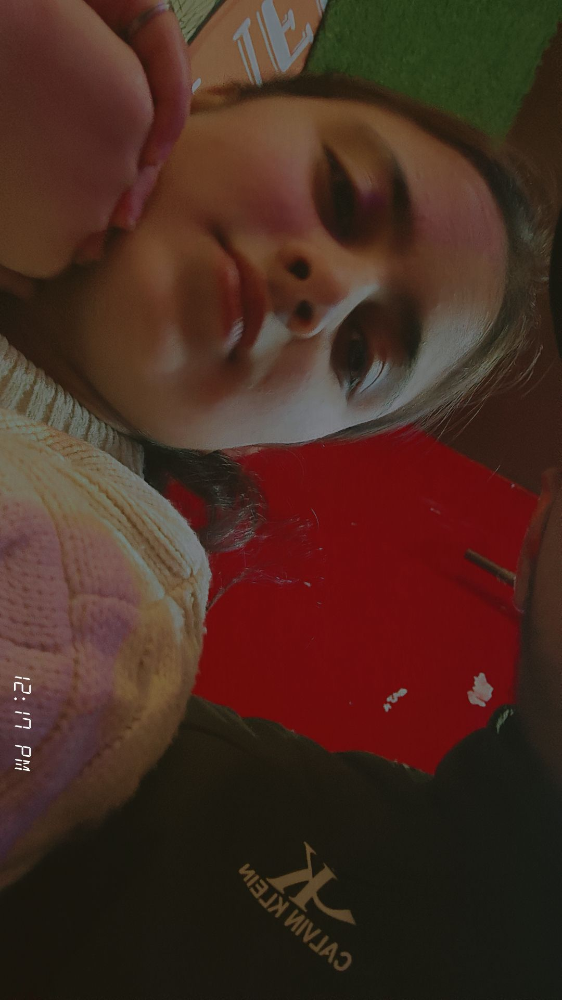
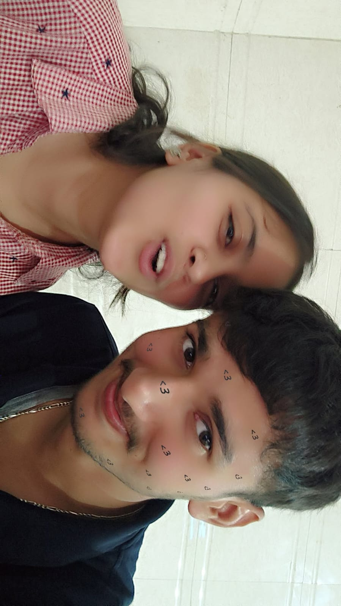
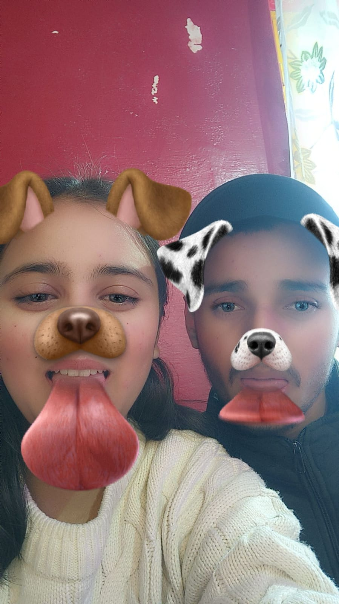

Hi guys - This is website developer Vinay... Note-"Don't share this with anyone as it contains some personal things of us"
Continue
Do you still feel something for me? Choose wisely, as both options have different outcomes. Choose what you truly feel.
Yes
No
Some precious memories (TAP) 💕


